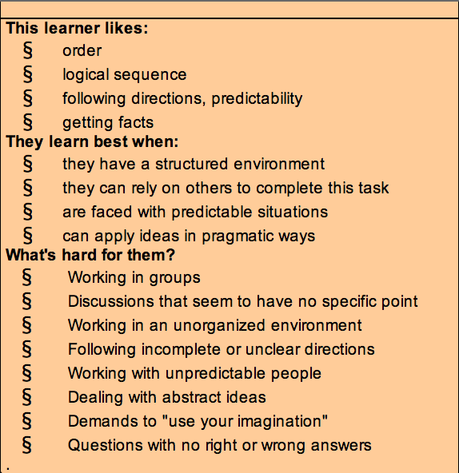

Cultural Blog 0.1.3
The Gregorc Mindset Test
I have to preface this post with a bit of a warning. My opinions on this particular subject go against the grain. I also don't really even touch on the subject of this week's cultural challenge to look back at my experience of phase zero so far and consider strategies to overcome my personal hurdles. I honestly couldn't get any mental traction on this assignment and I didn't know why until today. It finally came to me walking the dog in the wee hours of this morning. The Gregorc test had for some reason created a mental roadblock for me. So I spent a few hours letting the roadblock purge into the following. I don't have any qualms with this test being part of our curiculum or with anyone who finds value in the Gregorc test.
In others words, yeah, well, its just like, my opinion, man.
My first experience with the Gregorc test, albiet an indirect one, was about 30 years ago. That was back in 1984, the year Dr. Gregorc published his findings on mind styles. And those who were in direct contact with psychological science publications almost certainly began refering others around them, collegues, patients, family, etc to this study. I say I indirectly experienced this study back then because, through the awesome, cosmic pipeline of cause and effect, I wound up being asked to refer to the study here, thirty years later. Do you know what else thirty years of cause and effect has brought to me at this very moment? No? Well, here's a list for you.
- Anti retroviral treatment for AIDS
- SRAM flash memory
- Stents
- ATMs
- Bar codes and scanners
- Bio fuels
- Genetically modified plants
- RFID and applications (e.g., EZ Pass)
- Digital photography/videography
- Graphic user interface (GUI)
- Social networking via the Internet
- Large scale wind turbines
- Photovoltaic Solar Energy
- Microfinance
- Media file compression (jpeg, mpeg, mp3)
- Online shopping/ecommerce/auctions (e.g., eBay)
- GPS systems
- Liquid crystal display (LCD)
- Light emitting diodes
- Open source software and services (e.g., Linux, Wikipedia)
- Non-invasive laser/robotic surgery (laparoscopy)
- Office software (spreadsheets, word processors)
- Fiber optics
- Microprocessors
- Magnetic Resonance Imaging (MRI)
- DNA testing and sequencing/Human genome mapping
- Mobile phones
- PC/laptop computers
- Internet, broadband, WWW (browser and html)
I've colored some of these items grey. Those are the items I personally can't draw a considerable connection between it and my mind style. However, everything else, seems like it could have significant impact on how my mind would compare against a thirty year old from 1984. In other words, I think Gregorc's data may be a tad dated in today's age.
My Own Mind
So whats my mind style? My "Gregorc" is concrete random, meaning I am independent, generous, optomistic, enthusiastic, and couragous. My weaknesses are I'm moody, short tempered, self-involved, impulsive, and impatient.
Wait. I'm sorry. That's my astrology style. I'm an Aries. The part of the Gregorc mind styles that bothers me the most is the vagueness found in its descriptions. If you've already found your mind style, look at the table and consider the terminology.

Then, take a look at the other three. Do you feel like they somewhat describe you as well? Can you find any terms or descriptions that are not appealling in some way? Better yet, do you notice any statements that conflicting? Heres a great example. The CS, AS, and AR mindsets all have a hard time working with groups. CS and AR minds even have multiple attributes related to difficulty working with people. However, the CR mind, the mind that learns best when "given the opportunity to work through the problems by themselves", does not have a single difficulty listed related to working with others. But at least those are slightly more specific than the selection of "likes" below:
- Getting Facts - Concrete sequential mind
- Applying logic in solving or finding solutions to problems - Abstract sequential mind
- Using their intuition - Concrete random mind
- Establishing healthy relationships with others - Abstract random mind
- "I hate getting facts." - A non-concrete sequential thinker
- "I really don't enjoy applying logic of finding solutions to problems." - A non-abstract sequential thinker
- "I don't trust my intuition and I avoid using it." - a non-concrete random thinker
- "I refuse to establish healthy relationships with others." - a non-abstract random thinker
Those are the thoughts of a mad man. And not the handsome John Hamm style of mad man.
No, to not be one particular style of mind seems to mean you're absolutely insane. At very least, not agreeing in some part of any table would mean you don't like anything rational. I don't find anything 'concrete' about any of the attributes used within the entire program.
But allow me to resolve this! I don't find the test pointless! For success in life, its imparitive to sometimes step outside your own mind and look at it. Go ahead, look at it. What does it want? What does it need? How did that get in there? Eww. Maybe you should rinse that out. Regardless of Dr. Gregorc's extremely dated data or his thorough exploitation of his pocket thesaurus, he still invokes a practice that doesn't get enough attention. Taking time to consider what works for me, or you, on a single sample size study. Whether or not we get our inspiration from a psychobabble questionaire or an observation of picses rising with Jupiter in aries, we can't know what we don't consider. And as Rupaul once taught me on her short stint of a talk show, "You can't love anyone else until you love yourself."
Now that's concrete science.